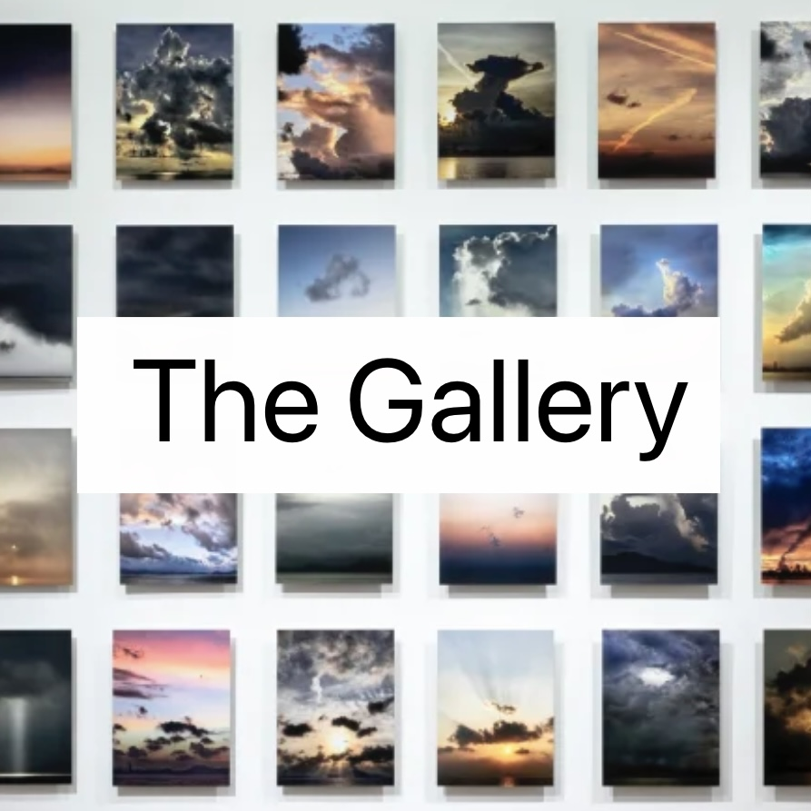
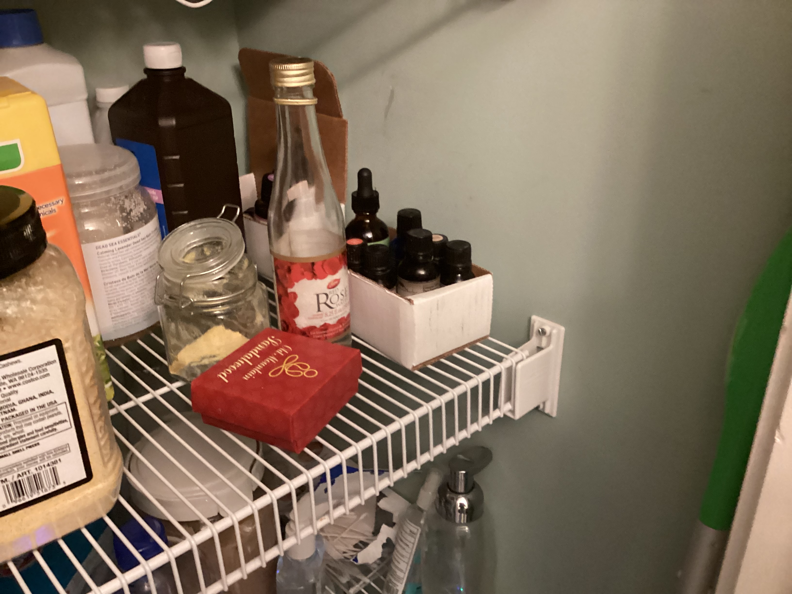

Navigator
OPEN |
OPEN |
These images might hold some clues. They were taken by Demetrius Demarcus Bartholomew James The Third on his expedition to fulfill the search, although he was unsuccessful. Finish his journey by using these images as a guiding light. Click the image to navigate to the next one.
Using a specific letter you should have previously obtained, fill in the blank with the correct phrase.
You shall obtain a noteworthy artifact _________.
| A | |
| E | |
| I | |
| M | |
| Q | |
| U | |
| Y |